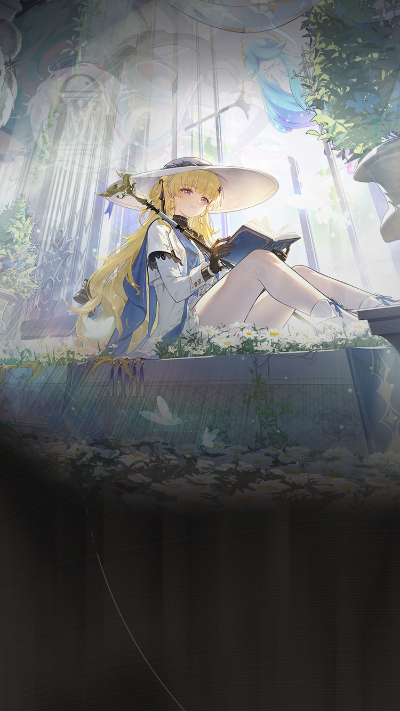

Wuthering Waves Resonator guide
Phoebe build, teams, weapons, and Echoes
Flexible Spectro/Frazzle damage or support direction.
Personal notes
Optional profile-aware info that keeps the main guide unchanged.
No profile connected on this browser yet.
Log in above to load an existing WaveKit profile, or use the team helper to mark your Resonators and weapons for Phoebe.
Skill priority
Team compositions
 Main damagePhoebeLeads the damage plan
Main damagePhoebeLeads the damage plan Setup helperLynaeSets up the damage dealer
Setup helperLynaeSets up the damage dealer Support slotRoverCompletes the team
Support slotRoverCompletes the teamLynae handles the main setup while Rover completes the team. Main-DPS Phoebe uses Absolution and requires a Spectro Frazzle applier: Spectro Rover for normal single-wave play or Ciaccona for multi-wave content. Her separate Confession support route belongs in Zani teams.
Main damagePhoebeLeads the damage planSetup helperLynaeSets up the damage dealer Support slotCiacconaCompletes the team
Support slotCiacconaCompletes the teamLynae handles the main setup while Ciaccona completes the team. Main-DPS Phoebe uses Absolution and requires a Spectro Frazzle applier: Spectro Rover for normal single-wave play or Ciaccona for multi-wave content. Her separate Confession support route belongs in Zani teams.
 Main damageZaniLeads the damage planSetup helperPhoebeSets up the damage dealer
Main damageZaniLeads the damage planSetup helperPhoebeSets up the damage dealer Support slotShorekeeperCompletes the team
Support slotShorekeeperCompletes the teamPhoebe supports Zani alongside Shorekeeper. Zani needs Spectro Frazzle support before generic damage buffs.
More reviewed options are grouped by playstyle. Keep partners inside the matching route.


Do not mix specialist partners across playstyles. Start with a complete team above, then replace only the matching role.
New player reading guide
If you are only checking Phoebe before selecting your Resonators, read the best team as a target, not a requirement. Missing Zani or Shorekeeper is normal; the team helper can turn your owned roster into a practical substitute.
Phoebe guide overview
Phoebe is a Spectro Hybrid DPS in Wuthering Waves. Its recommended build starts with Luminous Hymn, while its Echo plan uses Eternal Radiance. The guide also covers stat priorities, compatible teammates, and a practical rotation.
Quick build
- Role
- Hybrid DPS
- Team type
- Spectro Frazzle
- Best weapon
- Luminous Hymn
- Alternate weapons
- Lethean Elegy / Stringmaster / Augment
- Sonata
- Eternal Radiance
- Echo cost
- 4-3-3-1-1
- Main Echo
- Capitaneus
- Main stats
- CRIT Rate or CRIT DMG / Spectro DMG / ATK%
Stat priority
- Priority 1: Energy Regen for consistent Frazzle setup
- Priority 2: CRIT Rate and CRIT DMG
- Priority 3: ATK%
- Priority 4: Flat ATK, then Heavy ATK DMG%
Resonance Chain overview
Each Resonance Chain level comes from duplicate copies of this Resonator. Expand a level for the exact in-game effect and use the short line for a quick read.
Playstyles and modes
Absolution
The field-time damage stance. Build the team around Phoebe's personal Spectro Frazzle damage.
Confession
The faster support stance. Use it when another damage dealer should receive the larger field window.
Chain effects
R1Warm Light and Bedside WishesWhen in Absolution, Resonance Liberation Dawn of Enlightenment now increases DMG Multiplier by 480% instead of 255%.…+
When in Absolution, Resonance Liberation Dawn of Enlightenment now increases DMG Multiplier by 480% instead of 255%.
When in Confession, Resonance Liberation Dawn of Enlightenment increases DMG Multiplier by 90% and applies Spectro Frazzle to the targets with the maximum stack the targets can receive.
R2A Boat Adrift in TearsWhen in Absolution, DMG dealt by Outro Skills to targets with Spectro Frazzle is Amplified by 120%.…+
When in Absolution, DMG dealt by Outro Skills to targets with Spectro Frazzle is Amplified by 120%.
When in Confession, Silent Prayer grants 120% more DMG Amplification for Spectro Frazzle.
R3Daisy Wreaths and DreamsWhen in Absolution, the DMG Multiplier of Heavy Attack Starflash is increased by 91%.…+
When in Absolution, the DMG Multiplier of Heavy Attack Starflash is increased by 91%.
When in Confession, the DMG Multiplier of Heavy Attack Starflash is increased by 249%.
R4Ringing Bells on Wings AloftWhen Basic Attack, Basic Attack Chamuel's Star, Dodge Counter, or Chamuel's Star: Dodge Counter hits, the target's Spectro RES is reduced by 10% for 30s.+
When Basic Attack, Basic Attack Chamuel's Star, Dodge Counter, or Chamuel's Star: Dodge Counter hits, the target's Spectro RES is reduced by 10% for 30s.
R5Prayer to the Distant LightCasting Intro Skill Golden Grace increases Phoebe's Spectro DMG Bonus by 12% for 15s.+
Casting Intro Skill Golden Grace increases Phoebe's Spectro DMG Bonus by 12% for 15s.
R6Whispering Chirps in SilenceTargets entering the Ring of Mirrors are stagnated for an additional 2s.…+
Targets entering the Ring of Mirrors are stagnated for an additional 2s. The stagnation effect affects all targets entering the Ring of Mirrors and can be applied to 12 targets max for each Ring of Mirrors. Each target will only be affected by this effect once.
When in Absolution or Confession, summoning a Ring of Mirrors with Resonance Skill increases Phoebe's ATK by 10% for 20s, and triggers an extra Heavy Attack Starflash at the Ring of Mirrors' location. This Heavy Attack Starflash does not consume Divine Voice and is not considered as casting a Heavy Attack.
Effect names, numbers, and conditions follow current public game-data records. WaveKit keeps the full wording available so important conditions are not lost in a tier label.
Simple play pattern
- Use Phoebe as a setup piece: apply their buff, effect, or off-field pressure first.
- Swap back to the carry once their useful window is active.
- If their setup feels late, add Energy Regen before chasing more damage.
Build priority
- Difficulty
- Beginner friendly
- Safety
- Utility support
- Data note
- Guide checked
Phoebe is most valuable when their buff, element, or mechanic matches the carry you want to build.
Phoebe FAQ
What is the best Phoebe build in Wuthering Waves?
Phoebe's recommended WaveKit setup changes between Absolution DPS and Confession support, using Luminous Hymn, Eternal Radiance, and Capitaneus as the main Echo target.
What stats should Phoebe use?
Start with CRIT Rate or CRIT DMG / Spectro DMG / ATK%. If the rotation feels uncomfortable, improve Energy Regen or defensive comfort before chasing perfect substats.
What teams work with Phoebe?
Absolution Phoebe uses a buffer such as Lynae plus Spectro Rover, while Ciaccona replaces Rover for multi-wave Frazzle application. Confession Phoebe instead supports Zani with Shorekeeper or Verina.
Is Phoebe beginner friendly?
Phoebe's current difficulty is listed as Beginner friendly. If you are learning, pair them with safer sustain or defensive support.